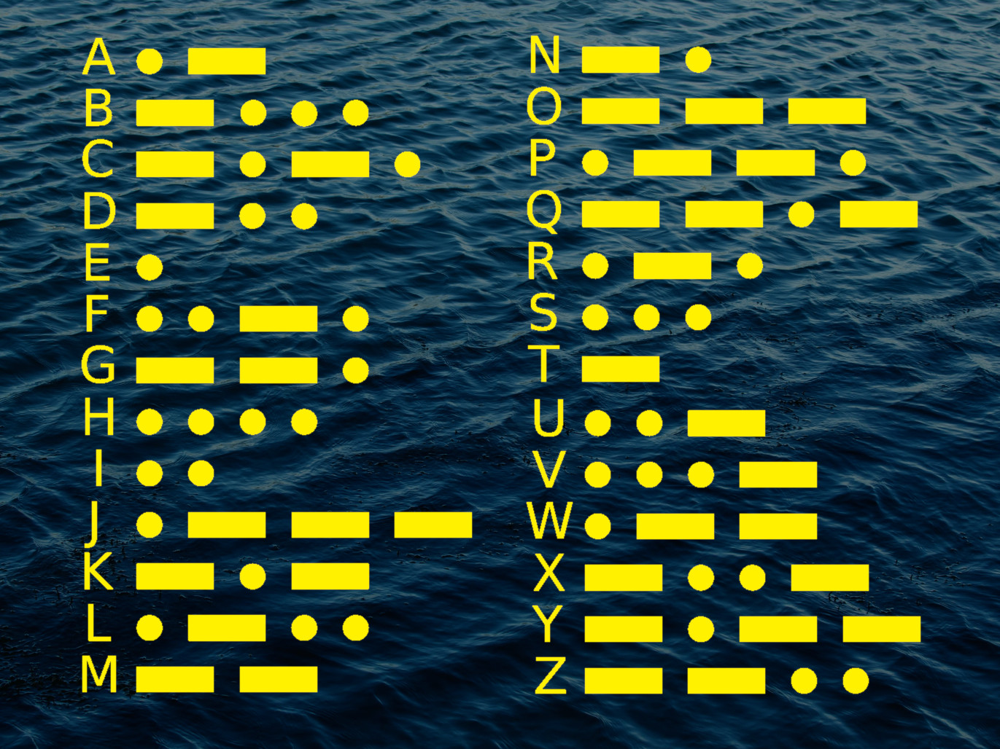

This is a morse code transmission received on the 13th October 2024. The sender is thought to be the Yelnya, a Russian ship operating on the Black Sea. .-. -.-. ...- / -.. . / ..- -.-. - .- ..... / .---- ...-- .---- ---.. .---- / ----. ----. ...-- ....- ..... / .---- ----- ...-- ....- -.... / ....- .---- -.... ----. ---.. / ...-- ..--- ....- ----- ..... / .---- ----- ..--- ---.. ----- / ....- ----- .---- ..--- ----- / ..... ....- ----- ----- ----- / --... ----- ..--- ----- ----- / ---.. ...-- ..... ----- ----- / ..--- ..--- ..--- ..... ..--- / ----- ----- ..--- ---.. ----- / .---- ...-- ----- .---- ..--- / -... - / .- .-. / ..- -.-. - .- ..... / -. Can you decode the message? What was the reported air temperature in degrees Celsius? (give your answer to one decimal place i.e. "12.3")
